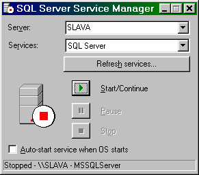

НазначениеРедактор миссий игры Операция Silent Storm: Часовые позволяет создавать отдельные миссии, которые можно загружать в интерфейсе игры, вносить изменения или дополнения (модификации) в существующие сценарные миссии, а также объединять несколько миссий в сюжетную последовательность, создавая собственный сценарий. С помощью редактора вы можете создавать карты с использованием всего набора объектов, которые входят в состав игры; размещать на картах противников, союзников и нейтральных персонажей; задавать условия выполнения миссии (поиск улик или выполнение определённых заданий). Параметры различных персонажей, их внешний вид и имеющиеся у них предметы, а также параметры оружия, боеприпасов и другого снаряжения можно менять в широких пределах. Можно вносить изменения в игровой интерфейс, менять или создавать собственные интерфейсные надписи или текстовые сообщения, выводимые в игре, а также подключать записанные вами различные звуковые эффекты и речь персонажей. Предусмотрена возможность импорта графических 2D и 3D-объектов, созданных в соответствующих программах. С помощью скриптового языка можно создать сценарий миссии с разветвлённой логикой в зависимости от выполнения тех или иных заданий и условий. Кроме того, скрипты позволяют задавать логику отдельных событий, связанных с действиями персонажей, действием с предметами или попаданием персонажей в определённые места игровой зоны. Скрипты также дают возможность изменять логику поведения и некоторые параметры персонажей противника. Редактор позволяет организовать совместную работу над проектом на нескольких клиентских машинах, которые подключены к общей базе данных по локальной сети. Все модификации игры, созданные с помощью редактора, могут быть упакованы в отдельный ресурсный файл, который можно переносить на другие компьютеры с установленной игрой Операция Silent Storm: Часовые и подключать их в игровом интерфейсе. При этом не требуется наличия установленного редактора на других компьютерах. Ограничения: редактор не позволяет вносить изменения, требующие программной реализации на уровне кода игры, в частности, невозможно изменить логику роста параметров персонажей, получение ими новых умений и навыков, исключить или добавить элементы интерфейса и интерфейсные экраны, изменить базовую логику ИИ и т.д. Использование редактора миссий регламентируется соглашением между издателем игры и конечным пользователем: Пользователь имеет право на создание и неограниченное распространение созданных с помощью настоящего редактора модификаций игры Операция Silent Storm: Часовые, а также подключение к нему собственных дополнений (моделей объектов или персонажей, скриптов и сценариев миссий, образующих сюжетную последовательность). Пользователь имеет право загружать и использовать как для игры, так и для собственных разработок модификации, созданные другими пользователям, при наличии у него установленной лицензионной копии игры Операция Silent Storm: Часовые. Пользователь не имеет права распространять исходные игровые ресурсы игры Операция Silent Storm: Часовые, в том числе отдельные объекты, скрипты, сценарии миссий и т.д., извлеченные из исходных ресурсов, а также редактор миссий и его отдельные компоненты, которые входят в комплект поставки. Все созданные модификации игры Операция Silent Storm: Часовые должны распространяться бесплатно и на безвозмездной основе; пользователь не имеет права распространять любые модификации с целью получения прибыли. Технические требованияДля работы с редактором игры Операция Silent Storm: Часовые компьютер должен соответствовать рекомендуемым системным требованиям: Windows 98/ME/2000/XP, DirectX 9.0 Основное программное обеспечение (входит в комплект): Игра Операция Silent Storm: Часовые, редактор миссий и игровая база данных; Дополнительное программное обеспечение (не входит в комплект): Microsoft Access 2000 или XP (только для работ по созданию или модификации сценария). Состав редактораРедактор использует следующие файлы (<S3> — каталог, в который установлена игра):
Примечание: файлы dot.exe, ft.dll, jpeg.dll, png.dll и z.dll, необходимые для построения графа сценария, не включены в комплект из-за лицензионных ограничений. На остальных возможностях редактора их отсутствие не сказывается. Установка и запуск редактораПрочтите инструкции и установите редакторОзнакомьтесь с Руководством пользователя по игре Операция Silent Storm: Часовые, в частности, с описанием интерфейса боевого экрана, управлением камерой мышью и клавиатурой, а также основными понятиями, связанными с игровым процессом. Установите на компьютер игру Операция Silent Storm: Часовые с исходного диска (при необходимости используйте Руководство по игре Операция Silent Storm: Часовые, где описан процесс установки). В начале установки при выборе компонентов отметьте пункт «Редактор игры». Если игра была установлена на вашем компьютере без редактора миссий, вызовите пункт «Удалить(переустановить) игру» в программной группе игры Операция Silent Storm: Часовые и в меню мастера установки выберите пункт «Изменить», в следующем диалоговом окне отметьте редактор «Редактор игры». Далее следуйте инструкциям мастера установки, появляющимся на экране. По окончании установки в программной группе игры должна появиться ссылка на редактор «Редактор игры». Настройте игруЕсли вы устанавливаете игру Операция Silent Storm: Часовые впервые, обязательно запустите её и проверьте её работоспособность, как минимум, пройдя несколько первых миссий. Задайте настройки игры, необходимые для качественного вывода изображения на вашем компьютере; для совместной работы с редактором установите в игре видеорежим с 32-битным цветом. При наличии проблем с функциональностью игры обратитесь к Руководству пользователя по игре, а также к документам Readme.txt по игре и обновлениям, где описаны возможные решения проблем. Установите необходимые компонентыЕсли на вашем компьютере не был ранее установлен Microsoft SQL Server 8.0 (MSDE), установите его с диска игры (вместо D: подставьте букву DVD-устройства в вашей системе), далее используйте установки «по умолчанию»": D:\Bin\MSDE\setup.exe После перезагрузки компьютера сервер можно запустить и проверить в работе. При возникновении трудностей с установкой или запуском сервера обратитесь к Приложению. Запустите SQL-сервер В системах класса Windows 2000 и Windows XP программа SQL Server устанавливается как сервис и запускается автоматически при старте. В системах класса Windows 98 и Windows ME SQL Server требуется запускать вручную: ссылка на программу запуска записывается в группу Startup, после загрузки ОС в правой части панели задач (taskbar) появляется иконка сервиса SQL Server Service Manager. Чтобы запустить сервис, выполните двойной щелчок по иконке, далее нажмите кнопку Start/Continue. Через некоторое время, когда сервис будет запущен, окно управления можно закрыть. По окончании работы сервис можно остановить кнопкой Stop и выгрузить SQL-сервер. Через несколько секунд после запуска SQL-сервера его иконка на панели задач станет активной — на ней появится зелёный треугольник. Затем можно запустить редактор. В дальнейшем работу с редактором всегда начинайте с запуска SQL-сервера. Проверьте запуск редактораПри первом запуске рекомендуется проверить стабильность работы редактора в вашей ОС. В начальном диалоге создания/выбора пользовательского профиля выберите пункт Original game и дождитесь появления основного экрана редактора. Не меняя настроек, выйдите из редактора (меню File, Exit) и попробуйте запустить его снова. Если проблем с повторным запуском нет, можно перейти к созданию пользовательского профиля. В некоторых системах могут быть трудности с повторным запуском редактора (происходит аварийное завершение или «зависание»). В этом случае следует запускать его с параметром «-clean». Создайте ссылку *.lnk на exe-файл редактора и в свойствах в строке запуска добавьте параметр —clean. Можно также изменить свойства ссылки на редактор в программной группе Операция Silent Storm: Часовые. Пользовательские профилиДля работы над собственными модификациями игры необходимо создать новый профиль. Профиль даёт возможность создать и редактировать копию игровой базы данных, не меняя данные в основной базе (собрать модификацию из исходной базы данных игры невозможно). Если с редактором работает несколько пользователей или идёт работа над несколькими независимыми модификациями, можно создать несколько профилей, по одному на каждый проект. Создание и удаление профиляЧтобы создать профиль, используйте начальное диалоговое окно, появляющееся при запуске редактора. Имя профиля может состоять из латинских букв и цифр и не должно содержать знаков препинания или пробелов. Профиль можно также создать с помощью параметра командной строки -createmod и именем профиля. Все файлы, относящиеся к модификации игры, связанной с текущим профилем, размещаются в каталоге Для удаления профиля используйте кнопку Delete в окне начального диалога. Основные разновидности модификацийС помощью редактора можно создавать различные модификации игры Операция Silent Storm: Часовые, которые можно, в целом, разделить на два типа: модификации, влияющие на исходную сюжетную игру, и дополнения, представляющие собой или миссии для самостоятельного прохождения, или миссии, которые заменяют те или иные сюжетные миссии исходной игры. Модификации исходной игрыС помощью редактора можно внести изменения в исходную базу данных игры, которые приведут к соответствующим изменениям в игровом процессе. Например, можно изменить параметры оружия, боеприпасов и другого снаряжения и, в конечном счёте, изменить баланс игры, изменить RPG-параметры отдельных строительных элементов, отредактировать или заменить те или иные тексты (интерфейс, игровые тексты, связанные с сюжетом и т.д.), поменять расположение элементов интерфейса. Редактор позволяет заменить текстуры различных объектов, импортировать в игровую базу данных (БД) новые объекты — изображения (например, текстуры облика персонажей), тексты, звуки и т.д. Вы можете внести изменения в сюжетные или случайные миссии — изменить расстановку и параметры персонажей противника, расположение улик, поменять архитектуру зданий. Можно доработать сценарные скрипты, определяющие поведение некоторых объектов, «срабатывание триггеров» по определённым событиям, появление в миссиях новых объектов, персонажей и их параметры. Таким образом, редактор даёт возможность в широких пределах менять существующую игру без создания самостоятельных миссий, используя только модификацию различных параметров и изменение сюжетной логики. Однако внесение изменений в те или иные параметры объектов и тем более в логику сюжета требует тщательного тестирования модифицированных миссий, при этом затраты труда на тестирование прямо связаны с величиной и серьёзностью внесённых изменений. Создание дополнений к игреДополнения к игре Операция Silent Storm: Часовые могут включать одиночные миссии или исходный сюжет, в котором часть миссий заменена новыми. Данное Руководство описывает преимущественно эту сторону использования редактора. В разделе 3 описаны необходимые действия при создании карты отдельной миссии, а в разделе 5 - включение миссии в сценарий. Этапы разработки миссииСоздание новой карты миссии для игры Операция Silent Storm: Часовые — длительный и достаточно сложный процесс. Редактор даёт возможность выполнить значительную часть этой работы, но не всю. Перед началом работы с редактором желательно иметь общий план или схему, по которой будет создаваться ваша миссия (план частично воплотится в эскизе и полностью — в карте). Сразу после создания новой карты, а возможно, и раньше, в процессе её создания весьма желательно выполнить тесты карты в игре внутри редактора, а затем и самостоятельно и по результатам тестов внести в карту требуемые изменения; возможно также, что циклов тестирования придётся сделать несколько. Для более быстрого освоения редактора и процесса разработки миссий рекомендуем использовать пример, созданный разработчиками из компании Nival Interactive, который прилагается к редактору. Общий план миссииВначале следует выбрать общий план, по которому будут развиваться события в миссии, задания, которые нужно будет выполнить игроку, улики, которые ему предстоит собрать, определить число противников и предполагаемый размер карты. Далее нужно выбрать сезон (лето или зиму), тип рельефа местности, ландшафт (открытое пространство, лес, деревня, город, пустыня, подземелье), а также время суток. Необходимо определить (задать) основные крупные объекты, вокруг которых должны развиваться действия. Далее желательно сделать на бумаге эскиз карты, определить расположение противников, разместить трофеи, наметить условия, которые необходимо обрабатывать или проверять по скриптам. После этого можно начать работу с редактором карт. Создание картыВсе операции по созданию карты выполняются в редакторе. Редактор позволяет разнообразить вид карты за счёт использования нескольких вариантов одного и того же объекта или вариантов составных частей карты. В конечном счёте можно сделать несколько вариантов карты, при входе в миссию один из вариантов будет выбран случайным образом. Пример создания самостоятельной карты и комментарии, описывающие отдельные приёмы работы, смотрите в разделе 3. Тест и доводка балансаПосле создания карты, а желательно — и в процессе работы следует загрузить карту в игре и проверить её работоспособность, внешний вид ландшафта и строений с различных точек зрения, а на более поздних этапах — попробовать пройти миссию с различными героями. После этого необходимо исправить обнаруженные недостатки в редакторе; возможно, некоторые операции придётся повторить неоднократно. Создание собственного сценарияЭто наиболее сложная часть работы. Перед созданием своего сценария желательно получить опыт работы в редакторе и сделать несколько самостоятельных миссий. Сценарий объединяет отдельные миссии в сюжетную последовательность. Для каждой миссии вам необходимо наметить задания, которые должны выполнить члены группы. В общем случае они должны найти одну или несколько улик (документ, предмет, персонажа), которые откроют им вход в новую игровую зону. С точки зрения игрока сценарий может быть линейным, когда все существующие миссии проходятся последовательно, или разветвлённым, когда к финальной миссии можно придти различными способами, пройдя различное число миссий. Наиболее сложный тип сценария предполагает генерацию доступных миссий и улик из полного сценарного дерева в самом начале сюжетной игры. Для изменения исходного сценария или создания собственного сценария нужно редактировать БД игры напрямую через Access (см. Приложение 3). Пример того, как можно изменить исходный сценарий игры, включив в его начало собственную миссию, рассматривается в разделе 5. Ограничения при работе с редакторомРедактор миссий обладает широкими возможностями по модификации игровой базы данных. Многие настройки редактора сделаны в расчёте на профессиональных разработчиков карт и позволяют добавлять, удалять или изменять практически все объекты, сценарии и миссии, существующие в игре. Часть настроек не рассчитана на конечного пользователя и подробно не документируется. В руководстве описаны только те возможности редактора, которые требуются для создания собственных миссий и сценарных модификаций. Редактор в принципе позволяет пользователю создавать произвольные объекты в БД игры через окно списка ресурсов, переименовывать их, перемещать по дереву, удалять и т.д. Мы настоятельно советуем не делать подобных операций, поскольку они могут привести к нарушению нормальной работы игры. Любые созданные вами объекты и темплейты должны размещаться в отдельных папках (ветках дерева) БД, не конфликтуя с уже существующими объектами. Для обеспечения нормального доступа создаваемые вами объекты должны располагаться в тех же закладках списка ресурсов и на тех же ветках ресурсного дерева, где находятся оригинальные объекты этого типа. Все новые объекты должны именоваться латинскими буквами и цифрами. Избегайте использовать символы национального алфавита. При использовании на вашей карте объектов и темплейтов, исходно существующих в базе данных игры, не вносите в эти объекты какие-либо изменения. При необходимости изменить что-либо в существующем темплейте сделайте копию средствами редактора под новым именем и вносите изменения в эту копию. Разумеется, новые темплейты, созданные вами и не относящиеся к сюжетным миссиям, можно модифицировать и использовать по вашему усмотрению. При повреждении БД игры выполните реинсталляцию файлов редактора. Если повредились файлы БД, относящиеся к профилю, восстановите их из архивной копии или (см. Приложение 4). Редактор сохраняет все настройки и параметры в Windows Registry. При некоторых некорректных операциях в основной базе данных или в данных в ветви Registry, относящихся к редактору, могут быть появиться неверные значения и редактор перестанет запускаться. Прежде всего определите, происходит ли сбой при выборе любого профиля (или до выбора профиля) или редактор не работает только с определённым профилем. В первом случае вначале необходимо попытаться исправить данные, запустив редактор с параметром —clean (см. раздел 1.4), а если это не даёт эффекта — выполнить переустановку (удаление и установку) редактора с помощью мастера установки игры Операция Silent Storm: Часовые. Если повреждён только один из профилей, можно попытаться скопировать 2 файла исходной базы данных из каталога .\res взамен файлов БД, находящихся в каталоге с именем профиля (разумеется, сделанные вами изменения будут потеряны). Рекомендуем время от времени делать архивные копии каталогов с именами профилей, тем самым вы сохраните вашу работу на случай непредвиденных обстоятельств. Обратите внимание, что все «внешние» операции с файлами БД игры (удаление, восстановление, перемещение из одного каталога в другой) следует выполнять при остановленном SQL-сервере. Дополнительная информацияДля обмена опытом с другими игроками по различным сторонам работы с редактором и по созданию модификаций рекомендуем обращаться в раздел форума, посвящённый модификациям игры Операция Silent Storm: Часовые, по адресу http://forum.nival.com На форуме можно задать вопросы сотрудникам компании Nival Interactive и другим игрокам-разработчикам, найти ссылки на их домашние страницы и адреса, где выложены модификации игры, узнать последние новости по выпуску обновлений и дополнений, и многое другое. Неофициальные страницы игры Операция Silent Storm: Часовые, поддерживаемые игровым сообществом, находятся по адресу http://www.silest.ru |